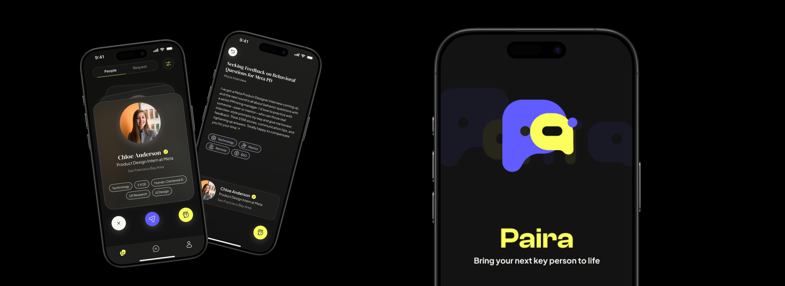

Role
Founding Product Designer
Led product direction, value proposition, core UX flows, and brand/design system foundations.
Young professionals know relationships matter, but existing networking tools often feel performative, cold, or hard to trust.
Founding Product Designer
Led product direction, value proposition, core UX flows, and brand/design system foundations.
Aug 2025-Present
From concept stage toward beta launch in an early startup environment.
Early startup team
Collaborated across product strategy, design execution, and technical implementation.

Paira started from a familiar tension: Gen-Z users want access to mentors, peers, and opportunities, but the ritual of networking can feel awkward, extractive, and unclear. My role was to help turn that tension into a concrete value proposition and end-to-end mobile experience.
Pain point
Young users need professional connection, but most networking products make identity expression, first contact, and follow-up feel high-pressure or performative.
I led product direction, core value proposition, end-to-end UX design, and the interface foundations that supported beta launch readiness.
The product direction supported 100+ waitlist users and 50+ beta testers while we continued refining onboarding, referral, and monetization flows.
Instead of treating networking as a feed of people, I pushed the experience toward context: why this person, why now, and what kind of conversation could naturally happen next. At the same time, I built design foundations that could scale across onboarding, referral, and paid features.
I helped define what Paira should stand for: an AI-native social product that makes professional connection feel relevant, safe, and human.
I designed and iterated onboarding, referral, and paid feature flows based on team goals and user feedback.
I created brand and design system foundations across logo, type, color, UI components, and motion assets.
For the portfolio page, I keep unreleased app flows private and use the live Paira site as the public-facing artifact. It gives interviewers a quick sense of the product positioning without exposing internal roadmap details.
Because Paira is an active startup, I am intentionally not publishing detailed internal flows, roadmap decisions, or private product artifacts here. The public version focuses on my role, product framing, traction, and design ownership.
0-1 product design, startup product strategy, design system building, and growth-flow thinking.
In conversation, I can walk through product framing, beta launch preparation, growth-flow tradeoffs, and design system decisions.